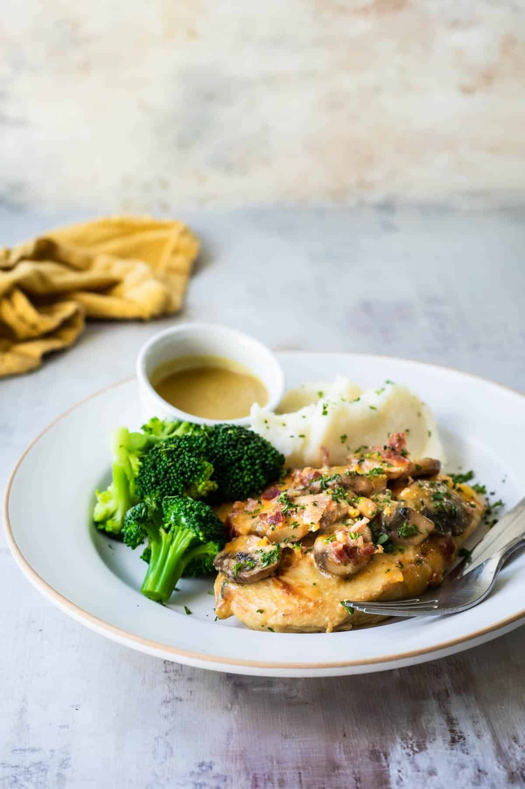

Alice Spring Chicken

Description
This Alice Springs Chicken recipe is based on the Outback Steakhouse favorite. To make this copycat recipe, marinate chicken breast in honey mustard sauce, then top with mushrooms, bacon, and a pile of cheese! So delicious!
Ingredients
For the marinade:
- 1/2 cup Dijon mustard
- 1/2 cup honey
- 1/4 cup mayonnaise
- 1 teaspoon fresh lemon juice
For the chicken:
- 4 boneless, skinless, chicken breasts
- 2 tablespoons butter
- 8 ounces mushrooms sliced
- 1 tablespoon olive oil
- 4 slices cooked bacon chopped into 2-inch pieces
- 2 cups Colby Jack cheese shredded
- 2 tablespoons fresh parsley for garnish, optional
- Salt and freshly ground black pepper
Steps
To make the marinade:
- In a small bowl, whisk together mustard, honey, mayonnaise, and lemon juice. Reserve 1/2 cup sauce in a covered container and refrigerate until serving time.
- Meanwhile, place the chicken breast in a large plastic zipper-top bag. Pour in remaining sauce and turn in bag until evenly coated. Refrigerate 30 minutes or overnight.
To make the chicken:
- Preheat oven to 400 degrees. In a large oven-proof skillet over medium-high heat, heat butter until the foaming.
- Add mushrooms and sauté until they have released most of their liquid and have started to turn brown, about 5 to 7 minutes. Transfer to a bowl and wipe out skillet.
- To the same skillet, heat oil until shimmering. Add chicken (discarding any remaining marinade) in a single layer and do not move until a golden-brown crust forms, about 5 minutes.
- Flip each piece and continue to cook until the second side is browned, about 5 minutes longer.
- Divide the mushrooms evenly over the chicken. Top with bacon and cheese. Cover the skillet and place in the oven. Bake until the chicken reaches 165 degrees when tested with an internal thermometer at the thickest part, about 10 to 15 minutes
- Remove from oven and garnish with parsley if desired. Season to taste with salt and freshly ground black pepper. Serve with reserved sauce on the side for dipping